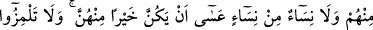
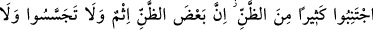
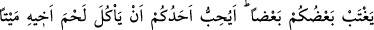
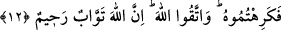
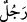

BİRBİRİNİZİN KUSURUNU
ARAŞTIRMAYIN
11. Ey müminler! Bir topluluk diğer bir topluluğu alaya almasın. Belki de onlar,
kendilerinden daha iyidirler. Kadınlar da kadınları alaya almasınlar. Belki onlar
kendilerinden daha iyidirler. Kendi kendinizi ayıplamayın, birbirinizi kötü
lakaplarla çağırmayın. İmandan sonra fâsıklık ne kötü bir isimdir! Kim de tevbe
etmezse işte onlar zalimlerdir.
12. Ey iman edenler! Zannın çoğundan kaçının. Çünkü zannın bir kısmı günahtır.
Birbirinizin kusurunu araştırmayın. Biriniz diğerinizi arkasından çekiştirmesin.
Biriniz, ölmüş kardeşinin etini yemekten hoşlanır mı? İşte bundan tiksindiniz. O
halde Allah’tan korkun. Şüphesiz Allah, tevbeyi çok kabul edendir, çok
esirgeyicidir.
“Ey müminler!” sizden “bir topluluk” yine sizden “diğer bir topluluğu alaya
almasın.” Âyette geçen “istihzâ etmesin” ifadesinin masdarı olan “suhriyye” kavramı,
bir kimsenin kardeşini hakir görmesi, onu hafife alması, onun derecesini düşürüp
kendisine iltifat edilmeyen bir hale koyması anlamına gelir. Âyetteki (
) kelimesi (
)
kelimesinin ism-i cem’idir. Nekre olarak kullanılması, “tamamı” veya “bazıları”
anlamını ifade etmek içindir. Buradaki kasıd bazılarıdır, çünkü alay bazı topluluklar
arasında söz konusu olur. Yani bazılarının diğer bazılarını alaya almaları nehy
edilmiştir.
Eğer ‘bir cemâatin başka cemâati alaya alması yasaklanmıştır, dolayısıyla bir
kimsenin başka bir kimseyi alaya alması bu hükme dâhil değildir’ dersen, şöyle derim:
Cemî sîgasının tercih edilmesi bir kimsenin başka bir kimseyi alaya almasından
sakınmak için değil, bilakis vakıayı beyan etmek içindir. Çünkü alay her ne kadar iki
kimse arasında oluyorsa da genelde bir cemâatin huzurunda olur; onlar da alaycıyı